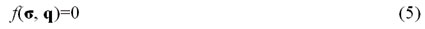

|
Onur
Kýrlý, Yrd.
Doç. Dr. Hasan Yýldýz
Ege Üniv., Müh. Fak., Makine Müh. Böl.
Ýzmir, Mart 2004
Özet:
Çelik
saclarýn soðuk þekillendirilmesi esnasýnda oluþan problemlere
bilgisayar destekli çözümler üretmek bir mühendislik çalýþmasýný
gerektirmektedir. Kompleks geometriler içeren kalýp yüzeylerinde,
ince çelik sac malzemesinin ne doðrultuda akacaðý ve þekillendirme
esnasýnda incelenen sacýn yýrtýlma, buruþma ve benzeri þekil
hatalarýnýn; kalýp tasarýmý aþamasýnda önceden görülüp önlem
alýnmasý, tasarým deðiþikliklerinin sonuçlarýný kalýp imal
edilmeden öngörülebilmesi için yapýlmasý gerekenler incelenmiþtir.
Benzer konularda yapýlan çalýþmalar incelenmiþ ve bu çalýþmada
problemlerin çözümü için sonlu elemanlar metodu seçilmiþtir.
Uygulama bir örnek üzerinde yapýlmýþ ve sayýsal çözümler deneysel
sonuçlarla karþýlaþtýrýlmýþ ve iki sonuç arasýnda çok iyi
benzerlik bulunmuþtur. Ayrýca program kullanýmý ile ilgili
detaylar oldukça kapsamlý bir þekilde verilmiþtir.
Anahtar Kelimeler:
Soðuk
Þekillendirme (Cold Metal Forming), Derin Çekme (Deep Drawing),
Non-Lineer Analiz (Non-Linear Analysis), Sonlu Elemanlar Yöntemi
(The Finite Element Method, FEA)
1. Giriþ:
1.1.
Araþtýrmanýn Amacý:
Sanayide
uygulanan soðuk sac þekillendirme ve kalýpçýlýk teknikleri
ampirik metotlara dayalý, deneysel ve çok maliyetli yöntemlerdir.
Derin çekme sonucu elde edilecek sac parçanýn þeklini, kalýnlýðýný,
içerdiði ön gerilmeleri, çekme iþleminde kullanýlacak minimum
sac boyutunu, sacýn malzemesini ve en uygun kalýp yüzeyleri
tasarýmýný bilgisayar simülasyonlarý ile önceden görüp maliyetten
ve zamandan tasarruf bu çalýþmanýn baþlýca amacýdýr.
Diðer bir deyiþle, bu çalýþmanýn amacý non-lineer ekspilisit
sonlu elemanlar kullanarak, temas modelini ve non-lineer malzeme
özelliklerini de inceleyerek derin çekme problemini modellemektir.
1.2. Literatür Araþtýrmasý
Araþtýrmayla
ilgi baþlangýç çalýþmalarý esnasýnda; impilisit sonlu elemanlar
analiz metotlarý, ekspilisit sonlu eleman analiz metotlarý,
tek adýmlý sonlu eleman analiz metotlarý, birçok farklý non-lineer
çözücünün deðiþik konularda kullanýmýyla ilgili örnekler ve
derin çekme deneyleri incelenmiþ, konunun teorisini en geniþ
ve detaylý yansýtan ekspilisit metot incelenmeye ve uygulamaya
deðer bulunmuþtur.
Ekspilisit
yönteme, kalýp simülasyonlarýnda, alternatif tek basamaklý
sac açýlým metodudur. Bu metot da sonlu elemanlar aðý yardýmý
ile geometri verileri iþlenir. Þekillendirme iþlemi yapýlmýþ
sac parça geometrisi sonlu elemanlar aðý olarak yazýlýma girilir.
Bu geometriden sacýn açýlýmý hesaplanýr. Parça üzerindeki
her düðüm noktasýnýn ne kadar yer deðiþtirdiði bu açýlým yardýmý
ile bulunabilir. Yer deðiþtirmelerden gerilme ve benzeri datalar
elde edilir. Akma ve kopma kriterlerine göre parçanýn kritik
bölgeleri gözden geçirilebilir. Bu metot hiç bir non-lineer
iþlem içermediðinden çok hýzlý sonuç vermektedir. Fakat þekillendirme
iþleminin ara basamaklarýný içermediðinden ve kalýp sisteminin
diðer elemanlarý hiç kullanýlmadýðýndan sonucun tutarlýlýðý
ve þekillendirme iþlemine hakimiyet ekspilisit metoda göre
zayýftýr.
Literatürde
benzer çalýþmalarda farklý non-lineer yaklaþýmlar içeren çözümlere
rastlanmýþtýr. A.G. Mamalis ve çalýþma arkadaþlarý (1997),
silindirik kaplarýn þekillendirilmesinde malzemenin etkisini
ve form karakteristiklerini, ekspilisit sonlu elemanlar yöntemi
ile (DYNA 3D programý yardýmýyla) incelenmiþtir.
A.G. Mamalis ve çalýþma arkadaþlarý (1997), kare kaplarýn
þekillendirilmesinde malzemenin etkisini ve form karakteristiklerini,
ekspilisit sonlu elemanlar yöntemi ile (DYNA 3D programý yardýmýyla)
incelenmiþlerdir.
M. Kawka ve çalýþma arkadaþlarý (1998), sac þekillendirme
prosesini çok basamaklý statik ekspilisit sonlu elemanlar
yöntemi ile (ITAS3D programý yardýmýyla) incelemiþlerdir.
J. Rojek ve çalýþma arkadaþlarý (1998), ekspilisit sonlu elemanlar
yönteminin sýcaklýk etkileri de göz önünde bulundurularak
(Stampack programý yardýmýyla) sac þekillendirmeye uygulanmasýný
incelemiþlerdir.
Ýncelenen bazý çözümler; kompleks geometrilerin að yapýsý
modellemelerinde, otomotiv sektörüne özgü yazýlýmlar kullanýlmadýðýndan
birçok kabul ve modelleme basitleþtirilmesi içermektedir.
Bu çalýþma içeriðinde en az veri kaybý ile að oluþturulmasý
ve að dosyasýnýn analiz yazýlýmýna aktarýlmasý ile ilgili
detaylarda bulunmaktadýr. Ayrýca diðer araþtýrmalarda gözlenen
baþka bir eksik ise kalýpçýlýk ile ilgili paket programlarýn
kullanýcýyý sýnýrlamakta olmasýdýr. Bu yüzden çalýþmada daha
esnek bir yöntem izlenmiþ birçok farklý programdan çeþitli
veriler derlenip çözücü yazýlýmda birleþtirilmiþtir.
Bu
çalýþmada diðer analizlerden farklý olarak gerek að yapýmý
gerekse dosya transferi otomotive uygulamasý kolay bir teknikle
sunulmuþtur. Ayrýca analiz için gerekli parametrelerin daha
genel ve esnek bir ara yüzden, kalýp sisteminin tamamýna hakim
olabilecek þekilde düzenlenebilmesi ile desteklenen çözüm
doðruluðu saðlanmýþtýr.
2. Saclarýn Plastik Þekillendirme Ýþlemi
Metal
þekillendirme çok kapsamlý bir konudur. En çok problem yaþanan
þekillendirme iþlemi derin çekmedir. Plastik þekillendirme
konusunda yapýlmýþ deneysel çalýþmalar sonucu bazý tablolar
hazýrlanmýþtýr. Bu tablolar ampirik metotlarla hazýrlandýðýndan
yalnýzca deney malzemesinin kullanýldýðý uygulamalarda iþe
yaramakta ve malzemenin iki boyutta akmasý kabulü ile oluþturulmaktadýr.
Karýþýk geometrilere sahip parçalarýn soðuk þekillendirilmesinde
bu deneysel veriler yetersiz kalmaktadýr. Karýþýk yüzeylere
sahip her parça için defalarca denemeler yapýlmakta kalýp
tasarýmý deðiþtirilip istenen ürün elde edilene kadar deneme
yanýlma yolu ile sonuca ulaþýlmaya çalýþýlmaktadýr. Sacda
meydana gelen buruþmalar pot çemberine açýlan kilit bölgeleri
ile engellenmeye çalýþýlmaktadýr. Kilitlerin yeri ve miktarý
da denemelerle belirlenmektedir. Ayrýca kalýplar üzerinde
yapýlan kaynaklý iþlemler kalýpta kalýcý iç gerilmeler oluþturmakta,
kalýbýn ömrünü kýsaltmaktadýr. Bu iþlemlerin tümü maliyeti
yüksek iþlemdir.
3. Plastisite
Plastisitenin
temeline oluþturan plastik deformasyon þu özelliklere sahiptir:
. Þekil deðiþim hýzýna baðlý plastik deformasyon, birim þekil
deðiþtirme deðerinde ilave bir bölünme oluþtuðunu kabul eder
:
veya diferansiyel ifadesi :
· Plastik deformasyon yola baðýmlýdýr. Plastik deformasyon
esnasýnda gerilme ve birim þekil deðiþtirme arasýnda lineer
bir iliþki yoktur. Bu yüzden plastik deformasyonun kurulum
ifadeleri diferansiyel denklemlerle veya artýrým ifadeleri
ile oluþturulmalýdýr (orandan baðýmsýz plastisite dahil).
En temel plastisite kurulum denklemi þu þekilde yazýlabilir:
veya diferansiyel ifadesi aþaðýdaki gibi yazýlýr (Hill,1950).
3.1. Pekleþme (Hardening)
Elastik mükemmel plastik malzeme çerçevesi içinde, tüm plastik
iþlem esnasýnda akma deðeri (akma yüzeyi) sabit kalýr. Pekleþme
(sertleþme) akma yüzeyi için gerilme uzayýnda bir geliþme
kanunu tanýmlar (Hill,1950):

Burada q pekleþme parametrelerinin bir grubudur, skaler veya
vektörel olabilir.
Pekleþme tipleri aþaðýdaki gibi sýralanabilir:
· Ýzotropik pekleþme: Akma yüzeyinin boyutu büyür, geniþler
ama deviatronik düzlemdeki merkezi ayný kalýr.
· Kinematik pekleþme: Akma yüzeyinin çapý sabit kalýr, fakat
merkezi deviatronik düzlemde yer deðiþtirir.
· Karýþýk izotropik / kinematik pekleþme: Önceki iki modelin
birleþimidir.
4. Sonlu Elemanlar Yöntemi
Sonlu
elemanlar metodu; karmaþýk olan problemlerin daha basit alt
problemlere ayrýlarak her birinin kendi içinde çözülmesiyle
tam çözümün bulunduðu bir çözüm þeklidir. Bu metot bilgisayarlar
çaðýnýn bir ürünüdür. Bilgisayar teknolojisinin geliþmesiyle
birlikte data iletim hýzlarýnýn sürekli olarak artmasýna baðlý
olarak bu metotla çözüm yapan paket programlarýn sayýsý gittikçe
artmaktadýr. Günümüzde çeþitli analizler için bu paket programlarýn
kullanýmý yaygýnlaþmaktadýr. Sonlu elemanlar metodunun kullanýlmasý
ve bilgisayarlarýn sanayiye girmesiyle, bugüne kadar ancak
pahalý deneysel yöntemlerle incelenebilen bir çok makine elemanýnýn
(motor bloklarý, pistonlar vs.) kolayca incelenebilmesi, hatta
çizim esnasýnda mukavemet analizlerinin kýsa bir sürede yapýlarak
optimum dizaynýn gerçekleþtirilmesi mümkün olabilmiþtir (Sarýkanat,
2001). Çalýþma içeriðinde plastik þekillendirmeyi incelemek
için sonlu elemanlar yöntemi seçilmiþtir.
Metal
þekillendirmede sonlu elemanlarýn seçilmesinin nedenleri arasýnda,
bu yöntemin çok farklý malzeme ve çok çeþitli temas tanýmlama
imkanlarý sunmasýdýr. Böylelikle þekillendirme iþleminin doðasýný
oldukça fazla deðiþken ile simüle etme imkaný saðlanýr.
|